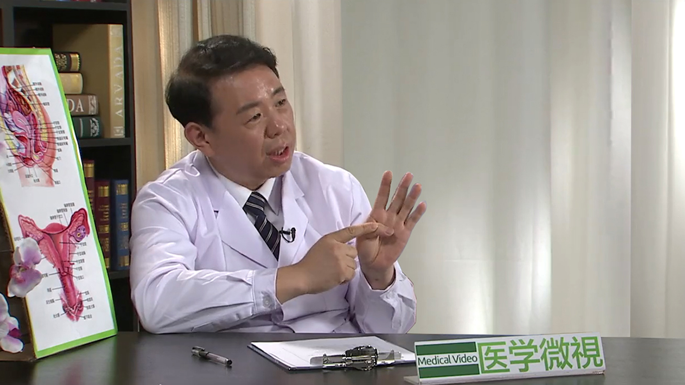

1.120 子宫内膜异位症¶
郁琦 主任医师¶

北京协和医院妇产科(学系)副主任 生殖内分泌科主任 主任医师 博士生导师；中华医学会妇产科学分会绝经学组组长、内分泌学组委员；《中华妇产科杂志》《中华骨质疏松和骨矿盐疾病杂志》《实用妇产科杂志》《生殖医学杂志》《国际妇产科学杂志》和《中国妇产科临床杂志》编委。
主要成就： 承担包括国家自然科学基金和十五科技攻关课题在内的多项相关科研课题，发表论文数十篇。多次获得北京协和医院先进工作者和优秀共产党员、中国医学科学院优秀共产党员和优秀党务工作者称号。
专业特长： 擅长妇科内分泌疾病的诊治，包括不育和试管婴儿、月经紊乱、多囊卵巢综合征、绝经相关疾病等。
子宫内膜异位症是怎么回事？¶
子宫内膜异位症是怎么回事？
子宫内膜异位症，是今天我们要说的主要的一个疾病，那么从这个病的名字上，大家就可以看的出来，子宫内膜异位症，那么异位，就相当于相对于是在位而言的，那么什么叫在位内膜，也就是正常的内膜，它不异位的内膜应该在哪里呢？
应该是子宫的里面，那么这是一个子宫的一个剖面图，那么在这个子宫的里面，这一层都覆盖有子宫的内膜，那么这个是子宫内膜原来应该呆着的地方，如果它没呆在这个地方，跑到别的地去了，那么就叫做异位，就不同的地方，异就是不同的意思，异位就是不同了，不同的位置，那就是叫做子宫内膜异位症，那就得了这样的一个病了。
子宫内膜为什么会发生异位？¶
子宫内膜为什么会发生异位？
那么（子宫内膜）为什么会跑出去呢，这个问题现在暂时无解，不知道原因，有各种各样的说法：
有的说，因为你想来月经，这是子宫内膜的一个重要的一个功能，一个特点，每个月内膜从这个里面脱落一次，那么就变成月经排出去，但有的时候，这个月经会顺着输卵管往回走，慢慢走到盆腔里头去，走到肚子里面去，那么走到肚子里面去了以后，这个月经的血就到了肚子里面，那么月经血里面，就含有很多的子宫内膜，那么有的时候这个到了肚子里面去的子宫内膜，会种在一个什么地方，长上了，活了，在肚子里头某个地方，那么就叫做子宫内膜异位症，这是大家通常所理解的这种内膜异位症的发生的方法。
但是从临床上来看，这种我们叫经血逆流，经血逆流到肚子里面去，经血逆流的这种现象，几乎每个人，每个月经周期都会发生，所以是一个非常普遍的现象。但是不是所有人都会得内膜异位症，大家既然都有经血逆流，但是有的人得内膜异位，有的人不得，这个不清楚，到现在为止搞不清楚，这是一种说法。
那么另外一种说法呢，就说是除了这个子宫内膜的这个部位，它原来该有内膜的地方，那么其它的地方的组织细胞什么的，它自己会变成子宫内膜，或者变成像子宫内膜那样子的东西，那样子的组织，它也起到这样的一个像子宫内膜这样子的一个作用。
这种学说呢，比如说有一些现象，比如说这些，有的人这种子宫内膜异位，不是在肚子里面，甚至长在肺里面，鼻子里面，耳朵里面，这都有的，我们叫做这种比较远处，那么这个经血逆流怎么都流不到那儿去的，但是那个地方有内膜异位了，也会有在子宫里面的内膜一样，每个月会出血，每个月都出血。
有些人就很奇怪，每个月咳血，这样大家（怀疑），这个人是不是肺里头长癌了，肺癌，或者什么有气管炎，支气管扩张，都怀疑这个病，但是最后把这个出血的地方找到，把它取了一块下来去化验，是子宫内膜，所以也是很奇怪。
那这个经血逆流的这种观点，无论如何解释不了这种现象，所以这个又解释不了，那么就想出别的这种理论，就是我们叫做化生学说，也就是其它的地方的细胞可以变成子宫内膜那样子的细胞，那么这个是另外一个学说，也就是这两个学说，一个是经血逆流的学说，和化生学说，这是两个目前它的原因的一个最广泛的这么一个假说。
但是到现在为止，没有一个非常确切的说法，为什么会这个子宫好好的呆在这里面，干嘛跑到别的地又去种植上，就是这个问题。
这个东西就比较，就是难以分析了，因为我刚才说了，经血逆流，几乎人人都有，几乎月月都存在，但是不是每个人都会得内膜异位的，那么这个就，我们朗院士，朗景和院士他提出了一个理论，叫做在位内膜决定论，也就是说，你看大家都有经血逆流，那为什么有的人得，在这个逆流的经血里头，内膜有的就能种上，有的人就种不上呢？
那么可见，这个逆流出来的这个经血里的内膜，也就是原来在子宫里面内膜流出去的，每个人是不一样的，那么有的人这个流出去的内膜，就容易在随便什么地方碰上就能种上，有的人就不容易，那就种不上，这个就叫称之为在位内膜决定论，也就是说这个人她本质上就是容易得内膜异位的，那那些人她虽然逆流了，但是她不种，种不上的，那这个人本质上是不容易得内膜异位的，那么这个本质说到底是什么呢？
那么作为一个从人的角度来说，这个人的本质，实际上就是基因了，也就是从根本上的这个基因决定，某些人的内膜，就很容易种植在某处，那么大多数人不容易种植，所以内膜异位呢，在某些人身上得，那么大概多少呢，可能目前来说，因为轻度的内膜异位很难去筛查出来，也不会，也没法去做一个广泛的人群的调查。
那么从我们的临床上来看，大概20%左右，这样的人里头，就是妇女当中，都是有内膜异位的，这个已经是很高的一个发生率了，非常多的人，当然很不准确这个数字，因为也没法确切的调查，这么普遍的一个事。那么就是虽然是很普遍，但是依然大多数人是不会的，20%有，80%还不会呢，所以就是每个人的在位内膜的本质是不一样的，所以这个就是所谓的在位内膜决定论。
那么现在正在对这个问题进行一些深入的研究，到底是什么样的一个它的本质，什么样的一个基因，什么样的一个在位内膜，才是最终决定于它到底是不是容易种植，这样一个特点，到现在为止还没研究出来，但是推测是这样子的。
月经是如何形成的？¶
月经是如何形成的？
那么子宫内膜跑到别的地去了，有什么问题，会造成什么危害，这个就是非常一个严肃的问题，如果它没有什么任何危害，跑就跑了，大家也不会关注它，问题就在于，跑到别的地方去的子宫内膜，跟在子宫里面的子宫内膜一样，它也会每个月出血，这是它最可怕的一个地方。那么在子宫里面的内膜，它为什么会出血，这个稍微解释一下。
就是我们子宫内膜是干什么用的，实际上是为了怀孕用的，子宫内膜就是为了怀孕用的，就是为了胚胎，就是小孩，或者小孩很早期的这种胚胎，早期胚胎，种上去，这个内膜就是干这个用的。
那么为什么会来月经，这是一次怀孕失败，就是没怀上，或者没有怀孕，那么这个准备好要怀孕的内膜没用了，没有用了，那它就会脱落，就会排掉，那么重新开始准备，一批新的内膜，为了让新的一次怀孕去得以进行，这是这个内膜就是这样子的，循环往复。
要排卵之前，就开始有内膜的准备了，排了卵之后，就进一步准备，然后排卵了以后，如果受精了，怀孕了，就会种到准备好的内膜上头，如果没怀孕，或怀孕失败，那么这个准备好的内膜就没有用了，没有用了，它就脱落一次，那重新开始准备，就是这样。
所以内膜就是有这样的一个特点，随着卵巢的排卵，它的激素水平的变化，而会长起来脱落，长起来脱落，就每个月一次，就这样，所以我们叫月经，把这事叫月经，就是这个意思。
子宫内膜异位到肚子里会产生哪些严重后果？¶
子宫内膜异位到肚子里会产生哪些严重后果？
那么这种长起来脱落，长起来脱落，脱落就是表现，就是月经就是血，就是出血，所以不在子宫里面的内膜，也会这样，也会每个月长起来，然后脱落出血。
但是有一个问题就在于，如果在子宫里面的内膜，它每个月脱落出血，它是从阴道排出去了，它有地，有个通道可以排出去，但是如果在肚子里面，它没有这么一个通道，没地排，这样就会，每个月出血出血，就会积攒下来，形成一个一包血在那儿，而且这包血，每个月会多一点，每个月都会多一点，那么就越来越大，就变成一个，我们叫做子宫内膜异位症囊肿，形成一个囊肿。
那么这个囊肿呢，里面是什么呢，不是一个真的肿瘤，不是像别的囊肿，我们一提囊肿就是一个瘤子，它不是一个真的瘤子，它就是一个血积在那里了，而且这个血是陈旧的，日积月累，每个月都多一点，每个月多一点，所以这个血就是很久了，多少年就存在那么一包。
那么这个血存的时间长了，大家都知道，就是比如说我们就是在宰杀动物以后，在做吃的时候，宰杀动物，那么血存下来，然后就会变成咖啡色的，不是鲜红的了，那么这一包血里面，也变成咖啡色的了，也逐渐，越来越粘稠，那水分逐渐被吸收掉，剩下的东西越来越粘稠，最后就形成一种跟巧克力一样的一种物质，有的甚至跟固体巧克力那样的，那么大多数情况下是粘稠的液体的巧克力那种样子，所以这种囊肿，我们把它形象的就称为巧克力囊肿。
我们说的巧克力囊肿，就指的这个子宫内膜异位囊肿，实际上学名应该叫子宫内膜异位囊肿，那么就是一个陈旧的血包，就是在这里面，这个越积越多，越积越多，这样就我们把它叫巧克力囊肿，那么这种巧克力囊肿呢，每个月都会大一点，都会多一点，所以它又会产生一个问题，就是疼，因为每个月都会多一点，这个地又包在一起，没地去了，那么就会越来越多，越来越多，就会比较疼，越来越疼，越来越疼，就是这样。
子宫内膜异位症都有哪些类型？¶
子宫内膜异位症都有哪些类型？
那么所谓的子宫内膜异位症，就是跑出去了，不在子宫里面，在外面，那么根据它在的地方，我们可以给它分成各种各样的类型，有不同的分类方法，那么有的分成外在的子宫内膜异位症，和内在的子宫内膜异位症。
什么叫内在的？外在就是，在肚子里头各个地方形成一个血包，就是这样的一个东西。那么内在的，它就没跑的远，就跑在子宫的肌肉层里头去了，就在临近的地方，那么这种的原因其实也不清楚，它就往里头长，那么这个可能是跟做人流次数多，或者什么刮宫什么之类的有关系，但是也不一定，没做刮宫的人也有得这个的，所以又搞不清楚了。
反正是有的长在肚子里，其它的这些地方，有的长在这个肌肉层里头去，大家知道肌肉层里头非常致密，肌肉都是很致密的，所以长在这个子宫的肌肉层里的内膜异位，它的异位内膜，它也要形成血包的话，那么它的一个特点，就是疼得特别厉害，因为它没有扩张的余地，因为在肚子里头，这个血包可以长大点，就囊肿越来越大，这个也还可以容纳，这肚子里面。
但是在这个肌肉层里头去，它那个血，它每个月都会出点血，每个月一点要胀大一点，但是这个肌肉是很致密的，所以给它撑大的这种余地非常小，所以它就非常非常疼，每个月就疼得死去活来的，通常就是这种。就是内在的内膜异位，我们把它叫做子宫腺肌症，就是子宫内膜的腺体跑到了肌肉里面去了，叫做子宫腺肌症。
这个的特点就是疼得特别特别厉害，每个月都疼，快来月经的时候就疼，来了月经的时候更疼，一直过了好多天，才慢慢慢慢缓解下来，就这种样子，那么大致分成这样，外在的和内在的这两种类型。
那还有的人根据它的种植的深浅，分成这种一般的腹膜型的，在肚子里头腹膜表面，这些地方，卵巢的形成的巧克力囊肿，还有就长的很深，深部结节型的内膜异位症，刚才提到过腺肌症，长在肌肉层，深部结节型的也是这个特点，因为它长的很深，它的扩张的余地小，越小的地越疼，就是这样，因为它自己扩张的余地，它给它的空间比较小，它肯定会每个月要胀大，胀不大了，那就疼，就是这种，越是深的，越是致密的地方，越是小的地，空间，越疼，所以各种各样的问题，随着它种在不同的部位，都有不同。
那么还有的就是长在，比如说它可以长在肠子里头，长在肠表面，慢慢慢慢长到肠子里面去了，往肠子里面长，那么这个时候就表现为便血，尤其是长在直肠，结肠这里头，就便血，便血也是每个月便血一次。
那当然有些人可能就搞不清楚这规律，就说经常便血，就怀疑有直肠癌什么的，这都很像，真的很像，有的时候去做了片子钡餐，特别像结肠癌，直肠癌，做了直肠镜，取了活检，才搞明白，原来是内膜异位症，这种也是有的，所以可以长在各种地方，它就有各种各样的类型。
女性自己能否早期发现子宫内膜异位症？¶
女性自己能否早期发现子宫内膜异位症呢？
这个病的发现很难，很多人她都是在后期，由于不育什么的，怎么都找不到原因，最后做了手术，开开肚子一看，有内膜异位症，这才找到原因。
当然最常见的表现就是疼，这是大家应该注意的事，当然疼有多种，就是我们这里指疼的主要是痛经，就是来月经的时候疼，那么痛经呢，也不全是由内膜异位症造成的，有的人从小一开始，就来过一两次月经之后就开始疼。
当然如果是第一次来月经就疼，通常是因为有些畸形，子宫和阴道有畸形，它的血液都堵在里面出不来，第一次来月经就开始疼的。
那么如果是来过几次月经之后，开始疼的，那么这种人，一般我们称之为叫做原发性痛经。那么是因为一些激素的紊乱，特别是前列腺素合成的一些问题所造成的，那么再大以后，那么这种原发性痛经，到二十多岁自己就好了。
但是如果是这种内膜异位症造成的痛经，就不会好的，尤其到二十多岁以后，反而会增加了，会疼得更厉害，那么这时候就要怀疑是有子宫内膜异位症的。
所以大家可能能够发现的这种早期的征象，就是这个了，确实很难，有的就是隐秘的在肚子里其他很深的部位，或者在这儿，根本看不出来，只有在做了充分的检查之后才能看的出来。
子宫内膜异位症对女性都有哪些危害？¶
子宫内膜异位症对女性都有哪些危害？
从它的（症状）表现来说，我们说一个病，要不要治疗，它主要是看它的危害在哪里，也就是它主要表现在对人的健康有哪些危害，那么作为子宫内膜异位症里头，大概有这么几种：
一个就是，疼，这是非常要命的一件事情。
那么另一个，就是有各种各样的包块，肚子里各种包块。
那么这个包块可以压迫一些东西，比如说压迫了输尿管，就排尿困难，然后造成这个肾瘀积水什么的，压迫了直肠，就造成便秘，这些都是可以，就侵犯了到什么地方，直肠里头侵犯了膀胱这些，就是压迫和侵犯。
那么还有第四个，其实是最重要的一个问题，就是不育，影响生育，其实这四个是它主要的问题。
但是这四个里面，其实包块我觉得并不重要，如果没有症状，没有压迫，没有侵犯，它包块有就有，反正它又不是个肿瘤，只不过是一包陈旧的血而已，它的癌变率也不能说没有，但是是很低的，这个可能不是特别重要的一个大的问题，那么主要的问题，其实就是两个事，一个是疼，一个是不育。
那么至于它侵犯压迫，这个也不常见，这个不太多，那么主要的两个大的问题，一个就是疼，一个是不育，所以对于内膜异位症的治疗，实际上也主要是围绕着这两个方面，那么病人的痛苦，实际上也主要是围绕着这两个方面来展开的，那么疼，就是真的，尤其是腺肌症，真受不了好多人，一来月经，就不能上班了，就得在家歇着好几天，这种现象，是非常常见的。
不育就是，内膜异位，长在这儿长那儿，内膜异位还真的很少造成输卵管不通，虽然它粘连的很厉害，但是大多数子宫内膜异位症的人，输卵管都是通的，卵巢都是好的，她还是怀不上，就是怀不上，所以她肯定还有一些特殊的机制，它不仅仅是影响这些输卵管卵巢这些事，它肯定有些特殊的机制。
那么从现在来看，这些所谓的特殊机制，主要是免疫性的，它分泌很多一些免疫的因子，然后在肚子里头长了好多内膜异位的话，腹腔里的像巨噬细胞的数量就大大增加，那么巨噬细胞本来是人的一个免疫调节的一个机制，就有外来的异物进来了，比如细菌什么的，巨噬细胞就会聚集到有细菌进来的地方，把它吃了，那么巨噬细胞就是干这个用的。
那么巨噬细胞多了，比如说这个人要怀孕，那么精子从宫颈子宫，不远千山万里，就特别艰难的跑到输卵管里头了，从输卵管里出来，要和卵碰面，要受精了，结果巨噬细胞一大堆给它围起来给吃了。所以这些人，她的怀孕的可能性是大大下降，但是这个巨噬细胞把精子吃掉，这只是一个可能的因素，还有好多好多其它的，现在没有研究出来的这些问题，妨碍怀孕，总之这个子宫内膜异位症，就是特别妨碍怀孕的。
子宫内膜异位症会引起不育吗？¶
子宫内膜异位症会引起不育吗？
那么主要的两个大的问题，一个就是疼，一个是不育，所以对于内膜异位症的治疗，实际上也主要是围绕着这两个方面，那么病人的痛苦，实际上也主要是围绕着这两个方面来展开的。
那么疼，就是真的，尤其是腺肌症，真受不了好多人，一来月经，就不能上班了，就得在家歇着好几天，这种现象，是非常常见的，不育就是，内膜异位，长在这儿长那儿，内膜异位还真的很少造成输卵管不通。
虽然它粘连的很厉害，但是大多数子宫内膜异位症的人，输卵管都是通的，卵巢都是好的，她还是怀不上，就是怀不上，所以她肯定还有一些特殊的机制，它不仅仅是影响这些输卵管卵巢这些事，它肯定有些特殊的机制。
那么从现在来看，这些所谓的特殊机制，主要是免疫性的，它分泌很多一些免疫的因子，然后在肚子里头长了好多内膜异位的话，腹腔里的像巨噬细胞的数量就大大增加，那么巨噬细胞本来是人的一个免疫调节的一个机制，就有外来的异物进来了，比如细菌什么的，巨噬细胞就会聚集到有细菌进来的地方，把它吃了，那么巨噬细胞就是干这个用的。
那么巨噬细胞多了，比如说这个人要怀孕，那么精子从宫颈子宫，不远千山万里，就特别艰难的跑到输卵管里头了，从输卵管里出来，要和卵碰面，要受精了，结果巨噬细胞一大堆给它围起来给吃了，所以这些人，她的怀孕的可能性是大大下降，但是这个巨噬细胞把精子吃掉，这只是一个可能的因素，还有好多好多其他的，现在没有研究出来的这些问题，妨碍怀孕，总之这个子宫内膜异位症，就是特别妨碍怀孕的。
哪些检查能帮助确诊子宫内膜异位症？¶
哪些检查能帮助确诊子宫内膜异位症？
从目前来看，有多种治疗的手段，那么当然所谓金标准，就是能够确诊的金标准就是手术。
当然以前，我们主要开开肚子看，里面到底怎么，这个手术有点大，作为一个检查性的手段，可能不是特别合适，所以现在有所谓的微创，微创手术，微创就是腹腔镜，做腹腔镜。
腹腔镜就肚子上打几个小洞洞，就从这个地方插一个镜子进去，插一个摄像头等于是，带着摄像头一个镜子插进去，然后出来我们接一个电视，就可以看到肚子里的各种各样的情况，所以一个很小的小洞洞，就可以把这个肚子里的情况都了解清楚了，哪儿有内膜异位，有没有巧克力囊肿，都一目了然。
同样的这个镜子也可以插到子宫里面去，然后看看子宫里面有没有什么问题，这些都可以，就是一个腹腔镜，一个宫腔镜，这是现在在这种微创手术当中，常用的这种手术的方式吧，那么通过这两个镜子，就可以非常简单的，无创的，当然不能说完全无创的，就是微创的，以这种方法，来了解病人到底有没有子宫内膜异位症，这个现在就变得非常容易了，因为这个创伤非常小，大家都是能接受的，那么这是金标准。
那么其它的检查呢，当然包括我们普通的妇科检查，这个也是必须要做的，因为要了解这个内膜异位都到了什么地方，有的到了直肠，我刚才说侵犯直肠什么的，我们这都可以摸得到，那么从妇科检查来说，一个典型的特点，就是觉得这个肚子里头都是疙疙瘩瘩的，而且这疙疙瘩瘩一碰就很疼，这个多半就是内膜异位症了，这个非常的明显。
超声，B超也就是，也有一些非常典型的特点，这个内膜异位症的这个囊肿，里面是特别特别粘稠的，像巧克力一样颜色的这样的一些粘稠液体，那么这些粘稠液体，就和其它的这些囊肿，就在B超下看起来是不一样的。
我们把它超有一些非常典型的描述，就是里头像什么细光点，有液体的流动，然后比卵泡，不像卵泡那样完全的透明透亮，它是有这种半透明的，这样子的一个囊肿，那么通常大致就是子宫内膜异位症了，但是要明确确诊的话，金标准，还是应该是腹腔镜，做腹腔镜，它才是一个诊断的金标准。
子宫内膜异位症怎么治疗？¶
子宫内膜异位症怎么治疗？
从治疗上来说，大概也是根据病人的问题所在，而进行相应的治疗，我们说腹腔镜是诊断的金标准，那么治疗也是非常重要的手段，因为我们可以通过腹腔镜看到，到底哪个地方是有内膜异位的，然后我们可以通过物理的方法，把它烧掉，用电烧，激光之类的这些超声，强的超声，等等这些手段，把这个内膜异位病灶给她烧掉，这是我们常常做的，在腹腔镜下常常做的一个操作。
那么在如果做完腹腔镜以后，明确是这个诊断了，那么我们还可以看到巧囊，把这个通过手术的方法，把它切开，把里面的这个囊肿剥掉，等等等等，在腹腔镜下都可以做这些操作。
那么明确了诊断之后，再干什么？主要是看病人有什么问题，如果病人是以疼为主，就是疼痛的症状非常严重，而没有生育要求，就是不想要孩子了，或者已经生完孩子了，这个病生完孩子可能还会有，生孩子本身就对这个病是一个非常好的一个治疗。
所以现在就是，一个就是生孩子比较少，就各种原因吧，政策问题，经济压力，工作等等等等各种原因，大家好像不太习惯于多要孩子了，这种内膜异位肯定发生率会增加，尤其晚要孩子，内膜异位的发生率也会增加。那么生育，要孩子本身，这是对内膜异位症的一个最好的治疗。
腹腔镜是最好的治疗，它的一个腹腔镜加药物的联合治疗，也是一个非常重要的一个治疗的方法。
那么药物用什么，比如说这个人明确是子宫内膜异位症了，但是她没有生育要求，不想要孩子，但是她疼，那么我们通常可以用药物来治疗。
药物有多种，其中一个比较简单的药物，就是口服避孕药，口服避孕药，那么用了口服避孕药以后，就可以把这个内膜抑制掉，当然用过口服避孕药的人，可能都有这种感觉，就是用一段时间避孕药以后，月经量会越来越少，所以这种在位的内膜，它体现的是月经量吧，它会抑制，月经量会越来越少。
那么异位的内膜也是一样，所以它产生的这种异位内膜的这种出血，形成巧克力囊肿的这种出血，也会越来越少，所以她的疼痛感会逐渐逐渐减轻，那么甚至现在还有一些用药的方法，比如说口服避孕药连续用，大家知道口服避孕药一般用来避孕的话，都是吃21天，停7天，再吃21天再停7天这么用的。
但是如果为了要治疗内膜异位，要缓解疼痛呢，我们可以当中不停，连续吃上几盒，在国外甚至还有一些专门用于这个目的的口服避孕药，也就是它可以连续吃三个月，再停一停看，这样的一个服用避孕药的方法，所以这些，你要把它控制了三个月都不让她来月经了，那当然不疼了，所以这个治疗方法的效果应该是非常明确的。
那么这里可能很多人就一听避孕药，觉得就很可怕，实际上避孕药真是个好东西，那么这样简单说一句，就是大家所想象出来的口服避孕药的任何的副作用，真实情况正好是相反的。
大家所能想象出来，比如说避孕药，大家都认为可以增加各种癌症，但实际上避孕药可以减少很多癌症，不增加任何的癌症，而且是减少癌症的。
避孕药可以，大家都想会增加子宫的癌症，实际上避孕药减少子宫的癌症，避孕药还可以减少卵巢的癌症，避孕药不增加乳腺的癌症，这些都已经得到大量的研究证实。那么口服避孕药，吃了避孕药以后，停了药，也容易不怀孕，恰恰相反，你吃了避孕药以后，停药以后更容易怀孕，这些都是大家对它的一个误区。
还有人认为吃了避孕药会发胖，实际上避孕药都可以有控制雄激素的作用，长期吃还有减肥的，就是体重会下降，这些都是大家所认知上一个非常非常大的误区。
治疗子宫内膜异位症的药物都有哪些？¶
治疗子宫内膜异位症都有哪些药物？
避孕药应该是治疗内膜异位症，特别是内膜异位症疼痛的首选的药物，这个是在很多国家的指南，包括我们中国的指南都是这么写的，口服避孕药是治疗内膜异位疼痛的首选药物，所以，因为它非常简单，而且便宜，而且效果好，就是这样。
那么其它的药物呢，实际上是根据内膜的这种发生的机理来确定的，那么子宫内膜为什么会长起来，不管是在位内膜还是异位内膜，它为什么会每个月长起来，主要的原因是因为卵巢在排卵，那我们干脆把这件事抑制掉，它就没了，避孕药是一种方法。
另外一种方法，就是控制脑垂体，就把脑垂体抑制掉，脑垂体是控制卵巢，让卵巢里的卵泡长出来，并且排出来，它必须要有的这样一个器官，所以我们干脆把垂体抑制掉了，那么卵巢卵也就不长了，那么雌激素也就没了，内膜异位也就萎缩了，就是这样。
那么拿什么来抑制脑垂体呢，就是有一种药物叫做垂体促性腺激素释放激素激动剂，很长的一个名字，那么把它用英文的缩写叫GnRH-a。那么这个药物，就是为了抑制这个垂体的，它的学名叫垂体促性腺激素释放激素激动剂，那么它的作用就是抑制了垂体。
抑制了垂体以后，促性腺激素没有了，那么就会有这个，卵巢的功能就会受到抑制，卵巢就不排卵了，雌激素也没有了，那么相应的不管是在位内膜还是异位的内膜，都会萎缩掉，这个就是它这个药物达到的一个效果。
那么没有这个药物之前，我们想要抑制卵巢是不可能的，所以自从有了这个药物，我们可以随心所欲的去抑制卵巢的功能，所以这个药物一出现，就得到了大家的非常的高度的重视。
那么甚至现在国际上，还有一个专门的学会，一个委员会，来针对这个药物，每年要开一个全球性的一个会议，因为这个药物，自从诞生以后，那么发现了它越来越多的用途，当然内膜异位的治疗是其中一个非常重要的一个范畴，其它的还有很多很多种用途，比如说男的用来治疗前列腺癌等等等等，这些都是可以用这个药物来治疗的。
怀孕也能治疗子宫内膜异位症吗？¶
怀孕也能治疗子宫内膜异位症吗？
怀孕是最好的治疗，所以这个人一旦诊断是子宫内膜异位症，如果她有生育要求，我们要积极的让她去怀孕，现在甚至就是，卫生部的文件里头，把这个子宫内膜异位症，写在试管婴儿的适应症里了，试管婴儿，你有内膜异位症的人，就可以做试管婴儿了，就是为了要让她尽快的怀孕，要抓紧时间尽快怀孕。
因为内膜异位症很容易复发，我们把它形象的称之为，这个子宫内膜异位症叫做是良性疾病，恶性行为，什么叫恶性行为？它是一个良性，它不是癌，也不是肉瘤，它是一个良性病，但是它有恶性行为，什么叫恶性行为，恶性的行为就是到哪儿长到哪儿，走到哪儿长到哪儿，这是一个恶性。
恶性的瘤子，大家都知道，会转移是很可怕的。这个子宫内膜异位症也是这样，它的这个异位的内膜走到哪儿长到哪儿，所以很多人肚子里哪儿哪儿都是，都是子宫内膜异位症，这个就很难，很难切干净，所以你即使做完手术，多数人也是会再复发的，就是都会复发的。
所以我们做完手术以后，赶在它复发之前，尽快的让病人怀孕，一旦怀孕，怀孕的过程是什么，怀孕的期间，就是胎盘产生了大量的孕激素，当然也有很多雌激素，在这种高孕激素环境下，内膜异位是不会生长的，所以怀孕本身，就是对异位的内膜一个抑制。
所以这个怀孕是特别特别好的一种治疗的方法。尤其是当我们用，做了腹腔镜，把这个内膜异位的病灶大部分给它烧掉了，都给它去除了，囊肿剥掉了，基本上没有了，没有能看得见的，就是肉眼所见的内膜异位的病灶全都去掉了，然后做完手术以后，马上让病人怀孕，接着就有这样一个对于这个异位的内膜的一个彻底的抑制，有十个月，它整个抑制了十个月，再加上喂奶，又半年，喂奶期间雌激素也很低，所以这都是对内膜的一个抑制。
有这么长时间的一个抑制，我想达到彻底治好的可能性就会大大增加，当然很多人还是会复发，但是就相当多的人就会彻底，就好了，自此就好了。
所以做完手术以后，不管是什么方式的手术，只要做完手术，内膜异位症做完手术以后，只要想要孩子的人，做完手术以后尽快怀孕，这是一个非常重要的。
子宫内膜异位症能根治吗？¶
子宫内膜异位症能根治吗？
很多疾病，它谈不到根治，什么叫子宫内膜异位症，就是在位的内膜跑到外面去了，那么它之所以跑到外面，跑到外面是个普遍现象，但是种上的人并不太多，但是也不少。
那么既然它这次跑到外面去能种上，那么以后每一次跑到外面去，它都有可能种上，所以到底这个病，你治完了是复发，还是实际上又重新又得的，这个事搞不清楚的，所以你既然这件事都搞不清楚，那你怎么能说治好还是不治好呢。
不过总之，反正是一句话，就这个病不要指望它能治好，这是不可能的，当然有些人能够彻底的烧灼，把能看的地方全给烧了，接着又怀孕，怀孕完了就喂奶，喂奶完了又怀第二个，然后再怀第三个，就这么着下去，一直把这个内膜处于抑制状态，也许好了。但是大多数人是好不了的，复发，只是时间问题，所以这个病它的最大特点就是这样。
我们一直在说，它是良性疾病，恶性行为，就指的是这个，它是一个良性的病，它不是肿瘤，但是它的行为是恶性的，恶性病，我们说，癌嘛，大家为什么谈癌色变，就是癌不可能根治，当然现在有很多癌，如果早期发现还是能根治的。
但是大家都害怕癌的一个特点，就是它到处转移，然后慢慢人就不行了，这个子宫内膜异位症就是这样的，它到处转移，转移的方法广泛，以至于你不可能把内膜异位症全部都杀死，全部都找得到，全部都给它消灭掉，这个对于大多数人来说是不可能的，所以它早晚要复发，有的人早点，有的人晚点，那用药怀孕能够延缓她复发，但是她迟早还是要复发的，所以这个病不可根治。
子宫内膜异位症会自愈吗？¶
子宫内膜异位症会自愈吗？
它（子宫内膜异位症）就是一个自现性的疾病，它自己会好，虽然我们治不好，但它自己会好，它什么时候会好呢，绝经了，人到了绝经以后，卵巢没有功能了，这个病就好了。
那么绝经了以后，即使有些人还要去补充一些雌孕激素，但是我们可以用这种叫所谓连续联合的不来月经的方法，给这些更年期妇女补充雌孕激素，也不会导致她复发，或者很难导致她复发，所以这些人一旦绝经了，你补充也好，不补充也好，反正它就好了，所以它是一个所谓自限性。
但这个所谓自现，她自己好，这个方式，也是很壮丽的了，一直得到卵巢功能衰退了，才能够好的，实际上也就是好不了的意思。
就像我们常说的另外一个病，叫多囊卵巢综合征，也是这样，它也是治不好的，就不可能治好，它也会自己好，什么时候好了呢，它比内膜异位症要早一点，它用不着到绝经，只要卵巢功能衰退了，卵巢功能衰退，它卵巢里有没那么卵了，它自然就没那么多囊了，囊就少了，它就算好了。所以一般来说四十岁以后，自己慢慢好了，这是多囊卵巢综合征。
那么这种子宫内膜异位症，要到绝经以后才会慢慢好，就是这样，总之一句话，大家不要指望这个病是能治好的，所以你要控制它，控制的方法，主要是依据症状，如果只是个包，没有任何症状，我觉得也可以不管，如果确定是内膜异位的话，就是要疼我们要解决，那么又怀不上孕，我们要解决，大概要解决的主要是这两个问题。
子宫内膜异位症手术风险大吗？¶
子宫内膜异位症手术风险大吗？
现在通常内膜异位症是用叫做腹腔镜的方法，腹腔镜是一个微创的手术，就是大家可能听上去也是有点恐惧，没有做过手术的人，还是觉得有点害怕，要全麻，其实全麻呢，是挺安全的一种麻醉，没有大家所想象的那么可怕，一听全麻，人就会变傻了，根本就无稽之谈，不会的。
做全麻，又迅速，恢复又快，而且肚子上没有什么伤口，只有这么小，1公分，0.5公分的伤口，就这么几个，两个三个伤口，仅此而已，这么小的伤口，根本就不太容易看得见，而且最大的那个伤口，1公分的伤口，还在肚脐眼里头，完了以后，你根本找都找不到，所以伤口是很小的，也就是创伤是很小的，我们把它叫做微创手术，所以这个手术的风险很小。
当然不管是什么手术，总是需要有医学的这种适应证，从医学角度来说需要做我们就做，需要做就不必害怕，这个手术是非常非常安全的，这个是没有问题的。
得了子宫内膜异位症生活中应该注意什么？¶
得了子宫内膜异位症生活中应该要注意什么？
（子宫）内膜异位的病人，从生活方式上，其实没有什么特别，也不需要跟有什么特别需要注意的，但是不管怎么说，一个健康的生活方式总是好的，我不管是哪种病人，来看病的，我是做妇科内分泌的，就是来看病的人，以这种不育，月经紊乱等等等等，这些方面为居多。
那么我跟所有的人，不管是来看什么的，一个基本的建议，就是所谓正常生活方式，什么叫正常生活，很多人不理解，我难道生活不正常吗，很多人会问这样的，那么什么叫正常生活，比如说我们有几个条件：
第一，我们比如说早晨六点多起床，晚上十一点之前睡觉，那么这一点能做到的人，其实就不是很多了吧。
第二点，三顿饭都得吃，尤其是早饭要吃，这又很多人做不到吧。
第三点，可能大多数人都做不到了，就是每天要有四十分钟左右的运动和锻炼的时间。
那么这个几乎无人做得到，所以你说起来，这是一个正常的生活方式，但是正常的生活方式，真的没有多少人能做到的，不管是什么样的人，什么样的病，正常的生活方式，是非常非常重要的，这个对内膜异位症的人来说，也是一样。
早生小孩会减少子宫内膜异位症的发生吗？¶
早生小孩会减少子宫内膜异位症吗？
那么另外具体到这个病来说，当然我的建议，从我们妇产科角度来说，我作为一个妇产科医生，我的建议肯定是尽早要孩子，这个是一个非常非常重要的一个建议。
你早要孩子，你在内膜异位要发生还没发生的时候，你怀孕了，那么这个本身就对内膜异位是一个抑制的作用，所以要尽早要孩子，这个是一个减少内膜异位症发生风险的这样一个非常重要的一个措施。
子宫内膜异位症会癌变吗？¶
子宫内膜异位症会癌变吗？
这是一个非常重要的事情，任何的组织都会癌变，我们想大概什么样的情况下容易癌变呢，也就是说癌变的这些组织都是什么，比如说我们说一个，所谓的癌是个什么东西，恶性的东西，癌，它就是一个，就是细胞的一个错误生长，它往歪的路去走了，那么这些细胞它本来好好的，为什么会错误生长，往歪了去走，它的基因，主要是基因发生了改变，那么这些基因为什么会发生改变，它长出了一个怪东西，不受控制了这个生长，这就是癌了。
那么什么情况下会让正常细胞往这个歪路上走，它基因会发生改变，不受控制，自己生长，就无限制的生长，什么时候会发生？那么最容易发生这种情况的，就是反复的损伤修复，这是最容易产生这个问题的。
那么如果这一块组织平平稳稳的，一个自然的这种逐渐缓慢的代谢的过程，那么很少会发生癌症，越是经常损伤，老要修复的地方，越容易得癌，就是这样，因为老有细胞的新陈代谢，它要细胞的分裂旺盛，越是分裂旺盛的，它越容易出现这种基因和染色体的这种错配现象这种，它越容易发生这种癌的这种表现。
那么子宫实际上是一个非常重要的一个器官，那么内膜，它就是一个，每个月都要脱落修复，脱落修复，这样一个地方，所以它是一个比较容易得癌的地方，实际上这个不管是子宫里面的在位内膜，还是异位内模，它都是每个月脱落修复，脱落修复，所以这个子宫内膜本身，不管是在位还是异位的，都是一个容易得癌的一个器官。
那么还有像，妇科这套系统，卵巢，卵巢为什么会得癌，有一种理论，卵巢每个月会破一口子，它卵才能排得出来，每个月都破一口子，那这破的口子就得修复，它每个月都得这么着反复的破，反复的修复，这种地方就容易得癌，类似这样的地方，所以我们当然就是大家都应该非常密切的注意这种反复的损伤修复的地方，包括内膜和异位的内膜都是这样，所以是一个容易得癌。
但是总体来说，子宫内膜异位症的病灶发生癌变，这个比例并不高，我们不用特别特别担心，我们通常认为内膜异位的病灶还是良性的，那么恶性的，有一些恶性的特点，这个我们想，可能讲恶性肿瘤的医生，会跟大家做详细的介绍，我们这个医生都知道，如何去判断，大家都不用特别担心，但是他要知道，它确实会有癌变，但是癌变的可能性并不大，就可以了。
子宫内膜异位症会遗传吗？¶
子宫内膜异位症会遗传吗？
这是一个非常复杂的事情，我们说一个病，如何去判断它是不是一个遗传性的疾病，当然最终是要发现它的基因，也就是得这个病的基因，如果是确实这个病，是由某个疾病造成的，那么它肯定是遗传的。
但是在找到这个病的确切的基因之前，我们可能不能下这样的一个结论，内膜异位就是这样，到现在为止，没有发现特定的基因，容易得这个病。
那么我们说要没有特定的基因，那么如何去分析这个病到底是不是遗传呢，那么就看家族史了，比如说，当然男的是不会得内膜异位的，就是女的得，就看这个女的得内膜异位了，是不是遗传呢，就看她母亲，看她的姐妹，看她母亲的姐妹，看她的奶奶，奶奶的姐妹等等等等。
当然现在这个事不太好分析，因为比如说现在得内膜异位症的这一代人，她的母亲可能还好分析一点，但是她的奶奶通常是生了好多孩子的，得内膜异位症的人很少，她奶奶这一辈的人，但是她从内膜异位症，现在得内膜异位症的二三十岁的人，她们的母亲呢，又通常，虽然她是一般是独生子女了，现在二三十岁的人通常是独生子女，但是她们的母亲呢，可能也是很少有姐妹的人，所以分析起来也是不太容易。
尤其是，如果真的这一家人，姐妹几个，包括母亲，都得了内膜异位，你就说她一定是遗传的吗，其实也不好下这样一个结论，也许还是环境因素呢，那么这一家人都住在一个屋檐下，她肯定吃的东西，生活方式都是差不多的，也许就是这些生活方式所造成的，这些人容易得内膜异位，也说不定，所以这事不太好分析。
子宫内膜异位症跟巧克力囊肿是一回事吗？¶
子宫内膜异位症跟巧克力囊肿是一回事吗？
子宫内膜异位造成的囊肿，就是巧克力囊肿，它内膜异位，它虽然跑到外面去了，但是它还只要排卵，只要有激素的周期性的分泌，它就会每个月脱落产生血，它又没地去产生的，就逐渐的形成一个囊肿，就变成了陈旧的血包在里面，那么陈旧的血越来越陈旧，就变成巧克力色，我不知道大家看到过没有手术的过程，那个真的是跟巧克力一模一样那个颜色。
子宫内膜异位症造成的不育如何治疗？¶
子宫内膜异位症造成的不育如何治疗？
就内膜异位症，它影响怀孕的原因，现在看起来不清楚，那为什么子宫内膜异位症是不育呢，现在很可能认为是一些免疫的因素所造成的，那么免疫的因素，到现在为止，实际上看不见，摸不着，大家也不知道怎么查起，因此也不知道怎么治疗，所以现在尽量的就开始要绕过这套免疫系统想，那么我们另辟捷径，那么所谓另辟捷径的东西，就是试管婴儿了。
那么试管婴儿是怎么做的呢，就是要，平常我们卵巢一个月只排一个卵，那我们这次要用好多药，然后让卵多长几个，把它取出来，不让它经过腹腔。
如果经过腹腔的话，这个巨噬细胞特别多，它就把那个精子都给吃了，就射精不了，那么现在我们把这个过程放在体外，把卵取出来，把精子拿过来，然后放在体外让它受精，形成胚胎以后，从下边宫颈放到子宫里头去，让它不经过肚子里面了，绕过内膜异位这个有损伤的这个部位，直接放进去，因此这个是现在比较认为解决内膜异位症不育的一个比较好的方法，所以现在就把子宫内膜异位症放在试管婴儿的适应症里了，所以就这个道理。
但是做试管婴儿的话，内膜异位症也还是有很多妨碍的，就是内膜异位症本身对试管婴儿有妨碍，一个重要的问题，就是内膜异位症做手术的时候，巧克力囊肿，巧克力囊肿最容易长的地方，就是卵巢。
通常卵巢，就是巧克力囊肿都长在卵巢上，因为卵巢它最容易种植上去，然后形成一个陈旧的血包，那么要做手术呢，就会要把这个内膜异位剥掉，把里面的囊皮给它揪出来，那么这个过程，就会损伤卵巢功能，那么这样子的话，做完了手术以后，这个卵巢的功能会受到影响，那么因此促排卵，或者获得的卵巢都会受到影响，可能卵就不那么多了。
因此所以这里我们，在我们科里头，我也反复呼吁，在各种场合我都反复呼吁，一定要在做这种手术的时候，要爱护卵巢功能，大夫注意，病人注意也没有用，但是病人要知道这件事情，作为医生来说，一定要在手术过程当中，保护卵巢的功能，尽量少的损伤，这样为以后的怀孕，还打一个好的基础。
不管怎么说，反正有一个卵巢在，就像留得青山在，不怕火来烧，卵巢就没了，怀孕根本就不可能了，总之有卵巢在，总是各种可能性，我们还可以去创造，没有卵巢真是没办法了，所以在我们说要怀孕的时候，对于做试管婴儿的来说，做手术的大夫，应该要注意保护卵巢的功能。
那么另外还有就是在内膜异位，它对于怀孕的影响，可能是非常多的方面，有些人是比较轻微的内膜异位，那么做完手术以后一看，这几个小点点，这个人不需要立刻就去做试管婴儿，尤其是这样的操作本身，各种免疫的因子了，包括巨噬细胞在这个肚子里聚集很多，那么通过这手术清理，把她腹腔给弄好了，那么做完手术特别容易怀孕。
所以做完手术，赶紧让病人怀孕，所以这些医生也好，病人也好，应该了解这些，那么我们说，做完手术也好，比如说我们前期的做各种输卵管的检查造影，腹腔镜这些，做完手术，刚刚做完这半年，特别容易怀孕的，一定要抓住这个机会，尽快怀孕。
女性围绝经期需要用药吗？¶
女性围绝经期需要用药吗？
看大家所理解的围绝经期是怎样一个阶段，我们从学术上来说，围绝经期的定义是什么，就是月经开始紊乱，到没有月经之后一年，这个阶段叫做围绝经期，这个可能跟大家所理解的围绝经期不太一样，大家可能把更年期，理解更年期了，就等同于这个。
那么从学术上的定义，什么叫月经紊乱，就是相邻两个月经周期的长度的变化，大于等于七天，挺绕口的一句话，但是其实也挺好理解，就是比如说这个月是21天一个周期，下个月变成28天了，那么就是有七天的差距了，这两个周期有七天差距，那么这个人进入围绝经期了，就是这样的定义，当然这个人必须得40岁以上，40岁以下出现这种变异，我们考虑其它的病，40岁以上，我们通常认为是可能是围绝经期。
那么进入围绝经期了以后，如果仅是月经有这样一些变化，她还是差不多每个月能来，还不需要治疗，先不管她，那么对于这些人来说，可能比较重要的，是要补一些钙片，维生素等等，这些方面的东西，也就可以了。
那么当到了月经特别紊乱的时候，比如说一两个月不来，或者老在出血，那这时候我们要干预了，那么干预的方法呢，就是我们说缺什么补什么，这是中医其实也是这样的一个理论，缺什么补什么，那么缺什么呢，这个时候，那么进入了围绝经期，所谓围绝经期卵巢功能衰退了，肯定是这样，卵巢功能衰退，首先表现的是排卵不好了，不排卵了，但是卵泡还是能长的，所以她缺孕激素，并不缺雌激素。
所以在这种人当中，应该首先补充孕激素，补充孕激素，两个主要目的：
第一，月经就变得很规律了，我们每个月给她点孕激素，她月经就会很规律。
第二个，也是更重要的原因，就是防止子宫内膜的癌变，就是子宫内膜是一个比较容易癌变的一个地方。那么子宫内膜为什么会癌变呢？
就是有雌激素的作用，雌激素让子宫内膜长啊长，不断的长，它长的过程就是细胞分裂，细胞分裂多了，旺盛了，就容易错配，错配就容易得癌，那么孕激素跟雌激素的作用正好相反，孕激素是抑制内膜的，所以我们说要在只有雌激素的情况下，这个内膜就是会癌变，容易癌变。
那么我们在这些围绝经期的人，她就是只有雌激素了，那么我们在这些人身上，给她适当的加上一点孕激素，这样就可以防止她癌变，又可以规律月经，这样就好处是很多的。
那么当这个人雌激素也没有了，什么叫雌激素也没有了，就是用了孕激素也不来月经了，这样的情况下，这个人就雌激素也没有了，那么这个时候我们才开始补充雌激素，雌孕激素都补，就是说所谓缺什么补什么。
女性缺少雌激素会出现哪些问题？¶
女性缺少雌激素会出现哪些问题？
但是雌激素没有，她不光是不能来月经这么简单，还有各种各样的问题，各种衰老，身体上，你可以想象的出来的所有的衰老，都是跟雌激素有关系的，我们能看的见的，像脸上的皱纹，这种皮肤，各种改变，枯黄了，头发什么，这些所有的改变，都是因为雌激素造成的，缺了雌激素以后，皮肤的一些胶原断裂，真皮层变薄，皱纹就会越来越多，这些是表面上看上的衰老的表现。
那么从内在的，就是各种黏膜，包括我们阴道的黏膜，泌尿系统的黏膜，甚至包括肠黏膜，肺里头的黏膜，所有的黏膜都会萎缩，所以伴随着肠道的这种功能的紊乱，甚至结肠癌，直肠癌的风险的增加，肺功能的下降，这些都跟雌激素有关系。
另外还有代谢方面的，骨头，这是毫无疑问的事，骨骼，钙的丢失加速，我们就是越老越抽抽，越老越抽抽指的是什么，就是老太太，老头矮不了多少，但老太太，如果你不给她干预，不补充雌激素，到七八十岁的时候，矮掉十公分是一个平均值，矮十公分。
那么再有就是各种血脂的，胆固醇上升，心脏病发生增加，糖代谢受影响，糖尿病的发生率增加，血管的弹性受影响，高血压的发生率增加，那么这些都是跟雌激素有关系，那么再往后，如果时间再长，还有老年痴呆，神经系统退化，也是跟雌激素有关系。
女性围绝经期补充雌激素会引起发胖吗？¶
女性围绝经期补充雌激素会引起发胖吗?
正好相反，这个又是大家认知的误区，总认为补充雌激素会发胖，其实缺雌激素才会发胖。那么女的为什么看上去像个女的，她的主要的特点，就是三围不一样，才是个女的，三围越不一样，越是美女，那么三围怎么不一样呢，就是肯定是腰细，胸围臀围大，这才是三围不一样，没雌激素了，最大的一个变化，三围逐渐趋于一致，这就是没雌激素的变化。
那么三围逐渐趋于一致，不是屁股变小，是腰变粗，也就是腹部脂肪和内脏脂肪的堆积，这是雌激素减少以后的最主要的一个体型的变化，所以老头老太太，你看从背后看根本分不出来，那姑娘小伙子从背后看，一看就知道这是男的这是女的，这是没问题的，所以没雌激素才会发胖。
围绝经期补雌激素要补多久？¶
围绝经期补雌激素要补多久？
这是要看，不规定期限，越早开始越好，缺了就得补上，每年做体检，根据体检的结果，来决定下一年怎么用，用不用，用什么，至于用多长时间，不规定，不限制，换句话说，可以一直用下去。
（补充雌激素和服用高血压、糖尿病的药）没冲突，可以同时用，年纪大了以后，高血压糖尿病这些就容易得，那么这个在内科治疗的同时，补充雌激素，这个一点问题没有。